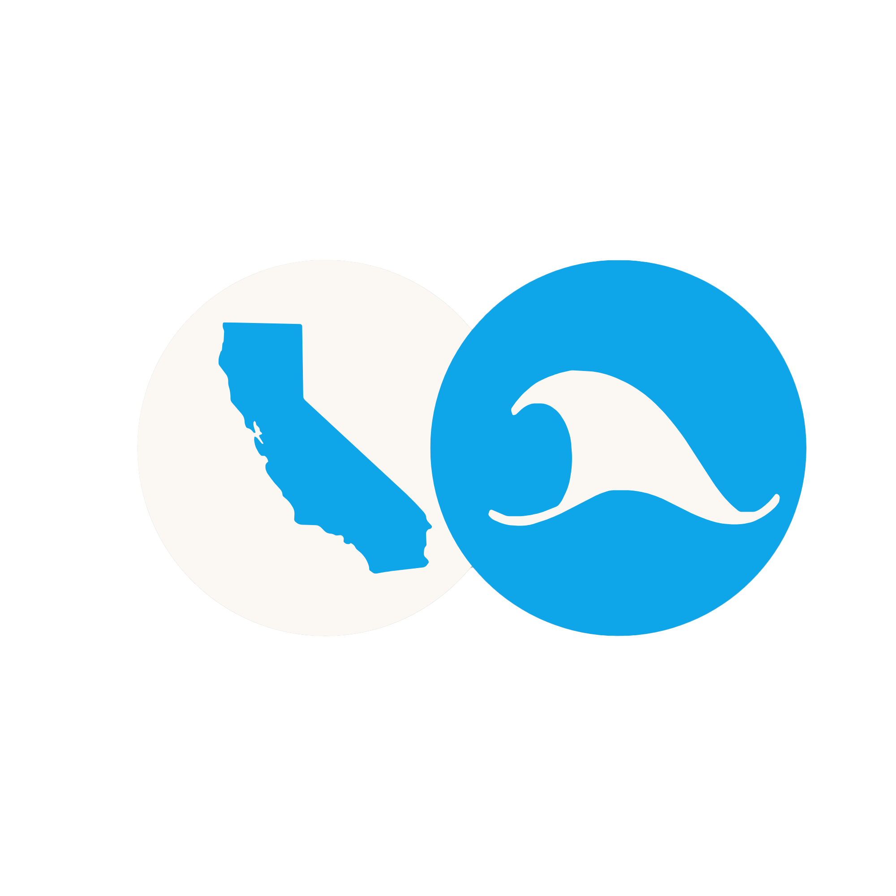
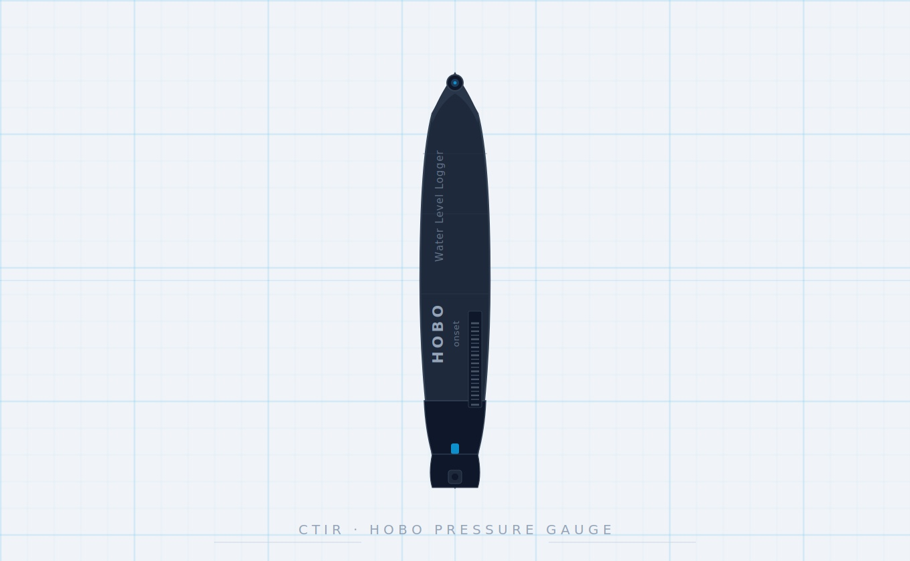
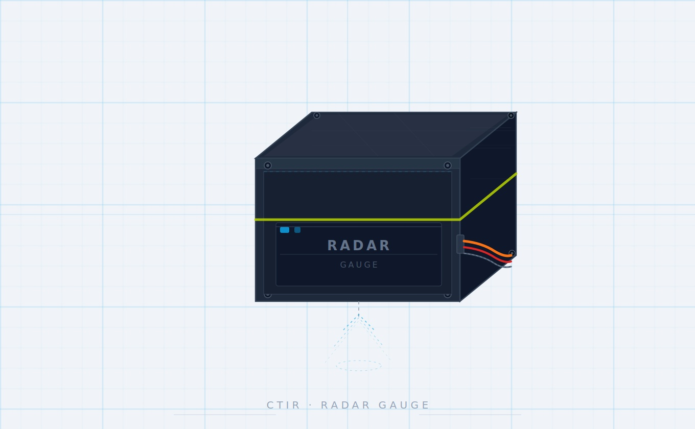
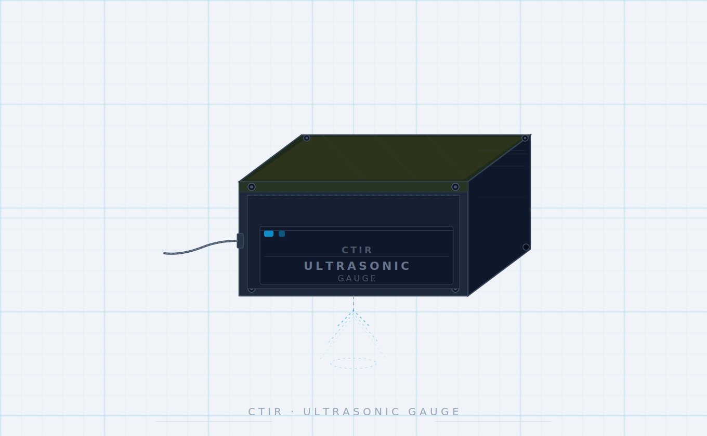

Cal Poly Students are mapping out how the Central Coast is changing - one tide at a time
Scroll to discover more ↓
For some, sea level rise might be a distant thing. In the face of climate change, as sea levels rise, their effects are beginning to reach inland to coastal communities. What we are doing to the planet is starting to make noticeable changes. Sea level rise has led to increased flooding, urban blockages and sediment build up in our estuaries and bays. We’ve seen this firsthand in the annual flooding of Toro Creek Bridge, Morro Bay State Park and other locations in San Luis Obispo. These effects of sea level rise will become increasingly drastic and more common as climate change continues. It’s key that we begin tackling how to not only continue to design our infrastructures, but record what tides look like and the ways they can reflect our human impacts on the planet.
The ProblemNOAA (National Oceanic and Atmospheric Administration) specializes in collecting data on all things environmental, including tide levels. However, gauges are sparsely located with one every 100 miles or so. With a price point of $25,000 dollars (aside from installation costs) NOAA gauges leave gaps of information along our coast, masking the reality of how sea rise is affecting coastal communities now and will continue to in the future. CTIR aims to fix that.
Using tide gauges, or devices that simply measure water levels and temperature, CTIR collects information of how water around SLO moves, how it’s affecting us, and how we can work with our land and community to create solutions.
”This project offers an ability to get across a message to people about how their shorelines might change in the future, and how we might have to alter how we interact with the shorelines.” - Dr. Serena Lee Physical Oceanographer and former research fellow with CTIR at Cal Poly San Luis Obispo
To give more insight on our gauges, we've asked the CTIR team to help explain how they work and their importance.

Gauge Type
HOBO Pressure Gauge
Evan Thompson

Gauge Type
Radar Gauge
Eugene Petrov

Gauge Type
Ultrasonic Gauge
Charlie Newcomb
When masters student Alex Dunn first joined the project, he fully committed his time to figuring out what made tide gauges tick. No one really knows how he figured out all the nitty gritty details of making a tide gauge, but he did. With the help of other students like Jonathan Mass and Kaden Caliendo, CTIR now had a way to measure tides in San Luis Obispo. The next step was making it consistent and being able to share the information that mattered with the community.
That's the work that Civil Engineering and Water Resources professor Stephan Talke, has been trying to do for the majority of his career. After years of research on the history of tide measurements, including post doctoral work on intertidal mudflats on the border of the Netherlands and Germany, Talke realized how tide measurements were one of the best ways to indicate sea level rise. It was also the best way to actually see how it was going to affect communities. With NOAA gauges so far apart the need for more gauges, at a lower price, in more areas is key to helping individual regions start figuring out solutions to sea level rise. So Talke started in San Luis Obispo, recruiting students from his classes to create CTIR. Now, we work to record SLO’s ocean movement and educate the community on how sea level rise will change our town.
“We’re trying to create a baseline measurement of the coast at many more locations than currently exists.” - Prof. Stephan Talke
Students go out to Cal Poly Pier to install a new radar gauge that can collect data remotely.
scroll to advance →
As Cal Poly students, CTIR team members take charge of their education. Encouraged not only to brainstorm solutions but take their ideas and turn it into a reality. From fixing or redesigning gauges, to planning deployment methods, to collecting and processing data, students use their own unique skills to further this project each step of the way. The inner workings of this project are really an endless cycle of trial and error. However, in an environment where you’re surrounded by passionate peers, the problem solving process is collaborative. Putting out solutions that are a mix of creativity and team work.
Write 1-2 sentences here introducing your video. What does it show, and why is it important to your story?
Video caption here
This isn’t something that’s going to lessen, or even go back to the way it was a decade ago. Our coastlines are actively changing, so we must change too. Collecting information about tides may seem mundane, but it’s what will help us fight beach loss, save our homes, and be able to continue living in the places we love and want to protect.
Our coastlines are actively changing, so we must change too.
Stay ConnectedFollow along as we continue to collect data and share what we find.
Cal Poly and Central Coast team up to tackle sea level rise through King Tides project
KCPRSurfing the Tide of Change: How an Australian Oceanographer is Making Waves in Environmental Science
Cal Poly EngineeringDevelopment of a Low Cost Acoustic Gauge for Simultaneous Tide and Wave Measurement
Alex Dunn — Senior Thesis 2023